On trouvera sous cette rubrique les éditions numériques des livres de Denis de Rougemont publiés en langue française.
Le corpus rassemble quarante ouvrages si l’on tient compte des rééditions, lesquelles sont également publiées en ligne quand elles comportent des éléments nouveaux (modifications, ajout d’une préface ou d’une postface…) du fait de l’auteur et de lui seul.
| Année | Titre | Éditeur | |
|---|---|---|---|
| 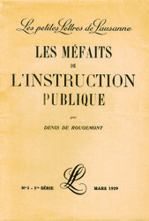 | 1929 | Les Méfaits de l’Instruction publique | Les Petites Lettres de Lausanne |
| 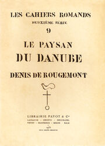 | 1932 | Le Paysan du Danube | Librairie Payot & Cie |
| 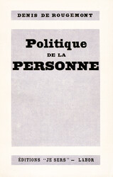 | 1934 | Politique de la personne | Éditions « Je sers » |
| 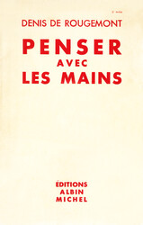 | 1936 | Penser avec les mains | Albin Michel |
| 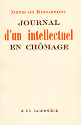 | 1937 | Journal d’un intellectuel en chômage | Albin Michel |
| 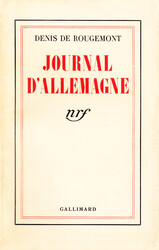 | 1938 | Journal d’Allemagne | Gallimard |
| 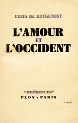 | 1939 | L’Amour et l’Occident | Plon |
| 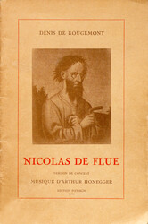 | 1939 | Nicolas de Flue, légende dramatique | Institut Neuchâtelois |
| 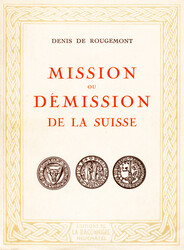 | 1940 | Mission ou démission de la Suisse | Éditions de la Baconnière |
| 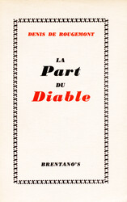 | 1942 | La Part du diable | Brentano's |
| 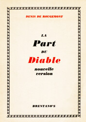 | 1944 | La Part du diable (rééd.) | Brentano's |
| 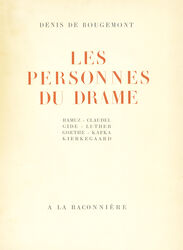 | 1945 | Les Personnes du drame | Pantheon Books |
| 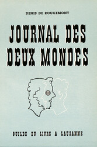 | 1946 | Journal des deux mondes | La Guilde du livre |
 |
1946 | Lettres sur la bombe atomique | Brentano's |
| 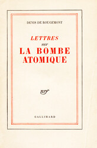 | 1946 | Lettres sur la bombe atomique (rééd.) | Gallimard |
| 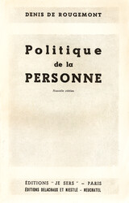 | 1946 | Politique de la personne (rééd.) | Éditions « Je sers » |
| 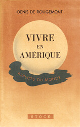 | 1947 | Vivre en Amérique | Stock |
| 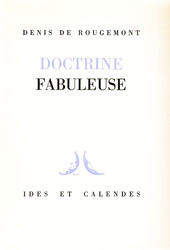 | 1947 | Doctrine fabuleuse | Ides et Calendes |
| 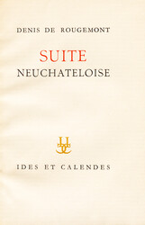 | 1948 | Suite neuchâteloise | Ides et Calendes |
| 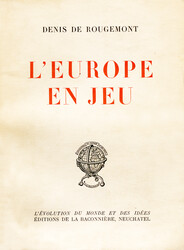 | 1948 | L'Europe en jeu | Éditions de la Baconnière |
| 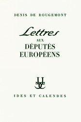 | 1950 | Lettres aux députés européens | Ides et Calendes |
| 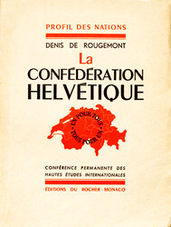 | 1953 | La Confédération helvétique | Éditions du Rocher |
| 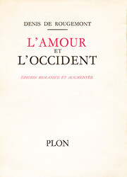 | 1956 | L’Amour et l’Occident (rééd.) | Plon |
| 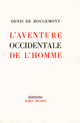 | 1957 | L'Aventure occidentale de l’homme | Albin Michel |
| 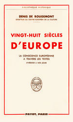 | 1961 | Vingt-huit siècles d’Europe | Librairie Payot & Cie |
| 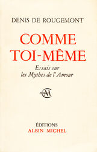 | 1961 | Comme toi-même | Albin Michel |
| 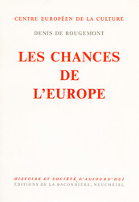 | 1962 | Les Chances de l’Europe | Éditions de la Baconnière |
| 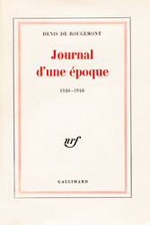 | 1968 | Journal d’une époque | Gallimard |
| 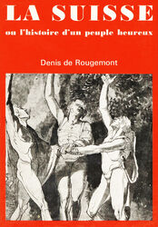 | 1970 | La Suisse ou l’histoire d’un peuple heureux (rééd.) | Le Livre du Mois |
| 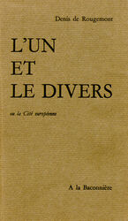 | 1970 | L'Un et le Divers | Éditions de la Baconnière |
| 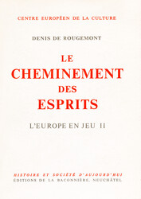 | 1970 | Le Cheminement des esprits | Éditions de la Baconnière |
| 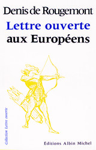 | 1970 | Lettre ouverte aux Européens | Albin Michel |
| 1972 | L’Amour et l’Occident (rééd.) | Plon | |
| 1972 | Penser avec les mains (rééd.) | Gallimard | |
| 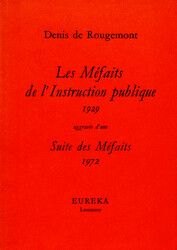 | 1972 | Les Méfaits de l’instruction publique (1929) aggravés d’une Suite des Méfaits (1972) (rééd.) | Eurêka |
| 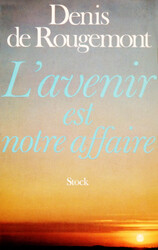 | 1977 | L'Avenir est notre affaire | Stock |
| 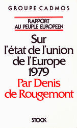 | 1979 | Rapport au peuple européen sur l’état de l’union de l’Europe | Stock |
| 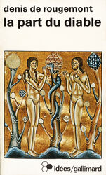 | 1982 | La Part du diable (rééd.) | Gallimard |
| 1982 | Le Paysan du Danube et autres textes (rééd.) | L’Âge d’homme |